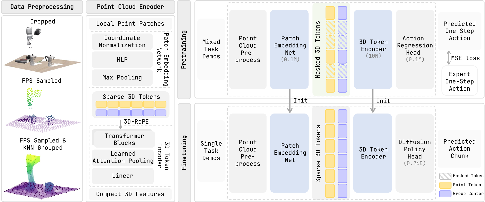

Learning Action-Aligned Sparse 3D Representations for Cross-Domain Robot Manipulation
Sparse2Act uses task-space actions as geometric supervision for a masked point-cloud encoder, then reuses only the encoder initialization for downstream policies.
Sparse 3D manipulation policies represent object geometry, spatial relations, and end-effector motion in a shared metric workspace. This structure suggests a simple pretraining signal: the demonstrated action should be inferable from the current 3D geometry. We introduce Sparse2Act, an action-aligned pretraining framework for sparse point-cloud encoders. Sparse2Act groups each point cloud into local sparse 3D tokens, masks a subset of tokens, and trains the encoder to regress the demonstrated action from the remaining visible tokens. After pretraining, the lightweight regression head is discarded, and only the pretrained encoder is used to initialize downstream policies, allowing downstream control to operate in its preferred action space. In simulated manipulation benchmarks, our pretraining enables downstream diffusion policies to achieve 86.9% average success rates on LIBERO-10 after 500 fine-tuning steps, and the same pretrained encoder transfers to Meta-World-5 with 73.4% average success rates. We further demonstrate sim-to-real deployment by pretraining the encoder on simulated workspace actions and fine-tuning with a small set of real-robot joint-space demonstrations. These results show that our method provides a simple and effective pretraining signal for learning control-relevant sparse 3D representations for robot manipulation.

LIBERO-10. Sparse2Act reaches 86.9% average success after 500 fine-tuning steps.
LIBERO to Meta-World-5. The transferred encoder reaches 73.4% average success.
Action-aligned pretraining provides a strong in-domain initialization while preserving substantial performance under cross-domain transfer.
All videos are shown at 4× speed.